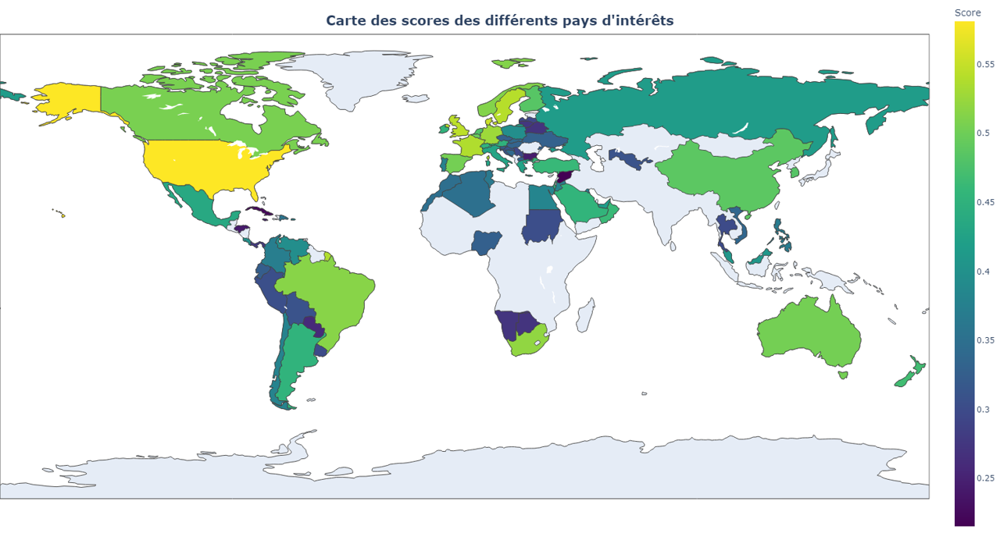
1) Analyse des données de systèmes éducatifs
OBJECTIF : Déterminer des pays à fort potentiel pour l'installation d'une entreprise d'enseignement à distance.
PYTHON ● ANALYSE EXPLORATOIRE ● DATA VIZ
Convaincu que la donnée est un levier stratégique de premier plan, j'ai construit un parcours académique d'excellence de niveau Bac+5, alliant rigueur scientifique et maîtrise opérationnelle des systèmes data modernes. J'ai d'abord obtenu un Master Mathématiques Appliquées, Statistiques — parcours Statistique & Data Science, Ingénierie Mathématique à l'Université d'Orléans, où j'ai développé des fondements solides en statistiques inférentielles et bayésiennes, en machine learning supervisé et non supervisé, ainsi qu'en deep learning et réseaux de neurones (CNN, RNN, Transformers).
Cette formation m'a appris à modéliser des phénomènes complexes avec exigence mathématique, aussi bien dans des contextes industriels (R&D, ingénierie) que dans les secteurs de la santé, de la finance et de l'environnement.
J'ai ensuite consolidé ce socle par un titre d'Expert en Systèmes d'Information, spécialité Big Data & IA à l'École Léonard de Vinci (ESILV), programme Grande École reconnu au niveau Bac+5, qui m'a permis d'acquérir une vision à 360° des projets data en entreprise : définition de stratégie data, management de projets en ingénierie de données massives, gouvernance, gestion des risques et conformité (RGPD, qualité des données), conception et déploiement d'infrastructures cloud-native (Data Lakes, pipelines ETL/ELT, architectures Lambda et Kappa), ainsi que le développement et la mise en production de solutions d'IA avancées.
Cette double compétence — rigueur mathématique et vision système — me permet d'intervenir sur l'ensemble de la chaîne de valeur de la donnée : de l'exploration et du nettoyage de jeux de données complexes, à la modélisation prédictive et au déploiement de modèles robustes en production (MLOps), en passant par la visualisation d'insights à forte valeur ajoutée pour les décideurs. Vous trouverez sur ce portfolio les répertoires GitHub de mes différents projets réalisés durant mon parcours.
 Data Science
Python
R
SQL
Machine Learning
Deep Learning
Computer Vision
NLP
Data Science
Python
R
SQL
Machine Learning
Deep Learning
Computer Vision
NLP
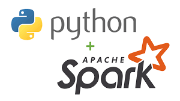
PySpark AWS · Azure
Python
R
SQL
Analyse Exploratoire
Analyses Statistiques
AWS · Azure
Python
R
SQL
Analyse Exploratoire
Analyses Statistiques
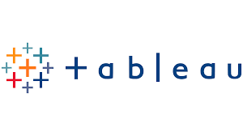
Tableau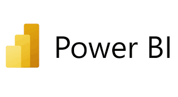
Power BI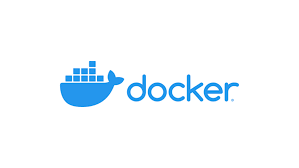
MLOps & Déploiement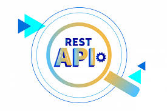
API REST Streamlit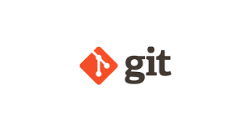
GitVous trouverez ici les répertoires GitHub de mes différents projets
en tant que Data Scientist.

OBJECTIF : Déterminer des pays à fort potentiel pour l'installation d'une entreprise d'enseignement à distance.
PYTHON ● ANALYSE EXPLORATOIRE ● DATA VIZ
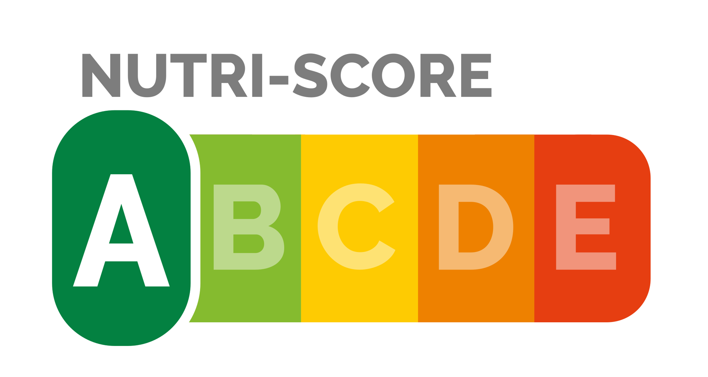
OBJECTIF : Analyse de la valeur nutritionnelle des biens de consommation afin de trouver des produits plus sains et plus responsables.
ANALYSE EXPLORATOIRE ● APPRENTISSAGE SUPERVISÉ (RÉGRESSION) ● RÉDUCTION DE DIMENSION (ACP)
OBJECTIF : Prédire les émissions de GES et la consommation d'électricité de bâtiments.
ANALYSE EXPLORATOIRE ● APPRENTISSAGE SUPERVISÉ (RÉGRESSION) ● INTERPRÉTATION DE MODÈLE (SHAP)
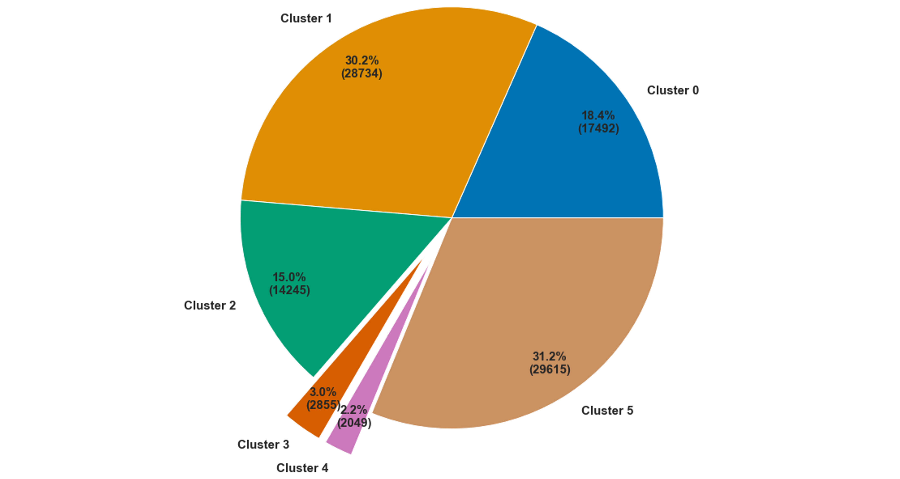
OBJECTIF : Segmenter et décrire les groupes de clients d'une entreprise de e-commerce.
CLASSIFICATION NON SUPERVISÉE (KMEANS, CAH, DBSCAN) ● RÉDUCTION DE DIMENSION (ACP, TSNE)
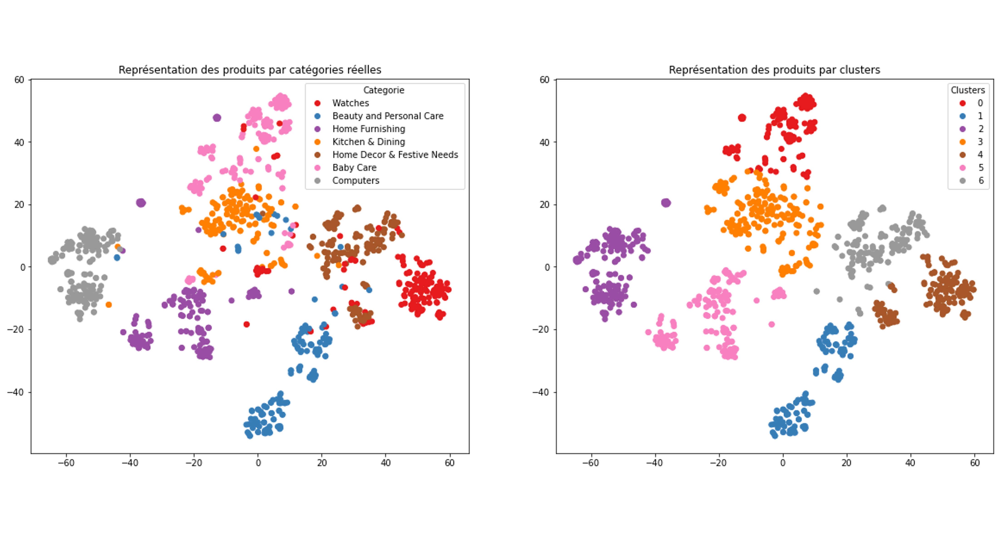
OBJECTIF : Réaliser une segmentation sur des données textuelles (descriptions) et visuelles (photos de produits).
DEEP LEARNING ● NLP ● COMPUTER VISION ● CLASSIFICATION NON SUPERVISÉE
OBJECTIF : Prédire la capacité d'un client à rembourser son prêt, déployer le modèle sous forme d'API et générer un dashboard dans le cloud.
MLOPS : MLFLOW TRACKING ● DÉPLOIEMENT DE MODÈLE ● DASHBOARD (STREAMLIT) ● DOCKER
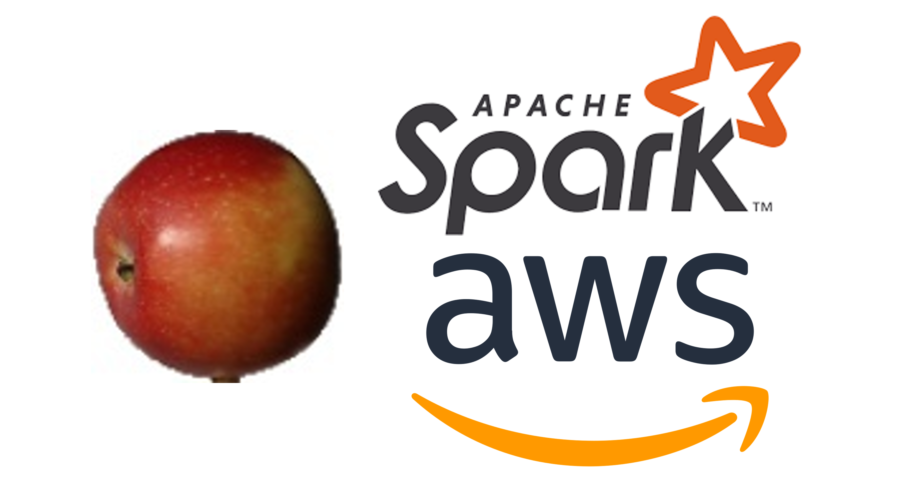
OBJECTIF : Utiliser un environnement cloud AWS pour extraire les caractéristiques d'images dans un contexte de Big Data.
CLOUD COMPUTING AWS ● SPARK ● TRANSFER LEARNING
Vous trouverez ici les répertoires GitHub de mes différents projets
en tant que Data Analyst.
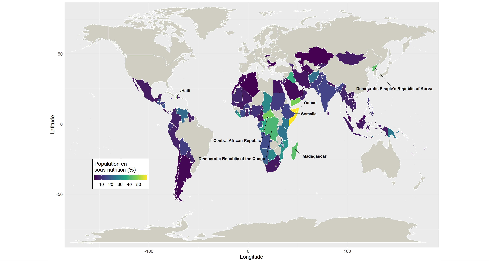
OBJECTIF : Analyse de la répartition de la sous-alimentation mondiale, de la capacité de production alimentaire et détermination de causes possibles de sous-nutrition.
R ● PYTHON ● REPRÉSENTATIONS GRAPHIQUES
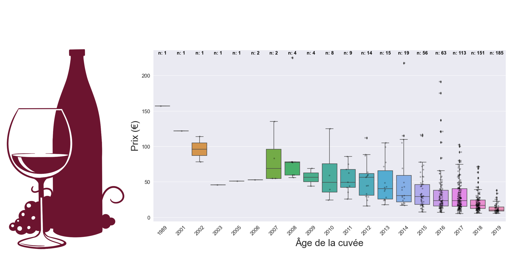
OBJECTIF : Organiser les données (jointures) et analyser les ventes d'un marchand de vin.
PYTHON ● ANALYSE EXPLORATOIRE ● REPRÉSENTATIONS GRAPHIQUES
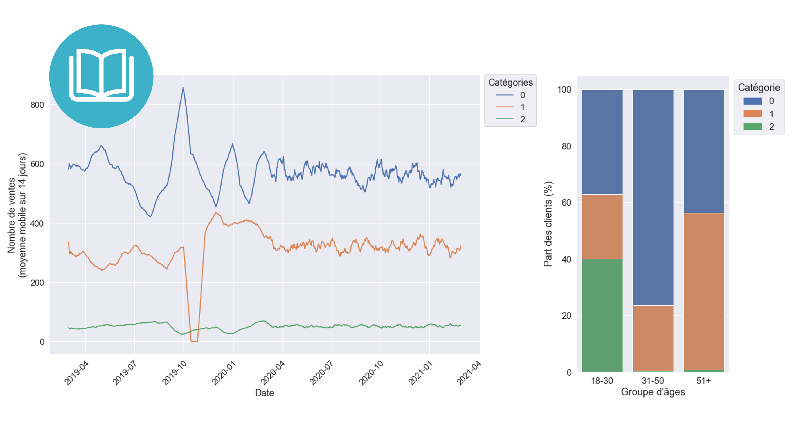
OBJECTIF : Analyser le chiffre d'affaires et le comportement des clients d'une boutique de vente de livres en ligne.
ANALYSE EXPLORATOIRE ● ANALYSES STATISTIQUES ● REPRÉSENTATIONS GRAPHIQUES
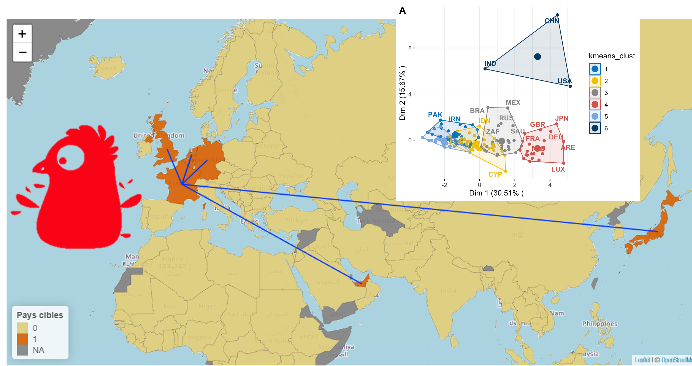
OBJECTIF : Effectuer une étude de marché afin de déterminer les meilleurs pays pour y exporter du poulet.
RÉCOLTE DE DONNÉES ● RÉDUCTION DE DIMENSION (ACP) ● CLASSIFICATION NON SUPERVISÉE (KMEANS, CAH)
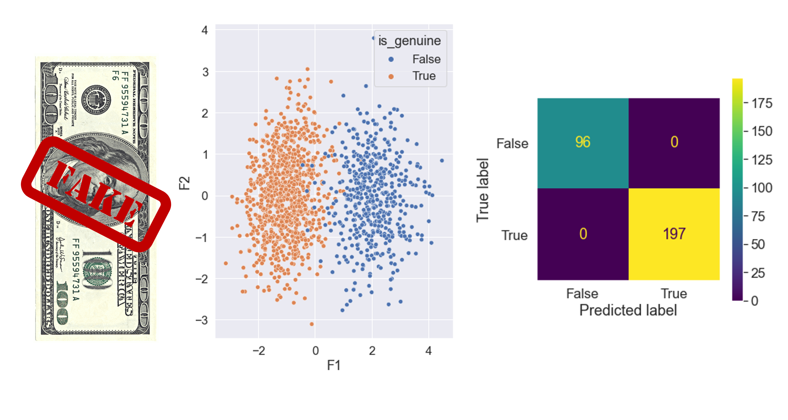
OBJECTIF : Utiliser des algorithmes de classification supervisée afin de prédire la véracité d'un billet à partir de ses dimensions.
MACHINE LEARNING ● STATISTIQUES ● CLASSIFICATION SUPERVISÉE ● APPLICATION PYTHON